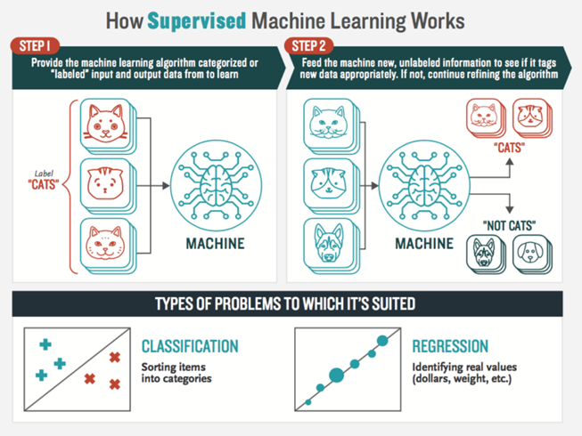
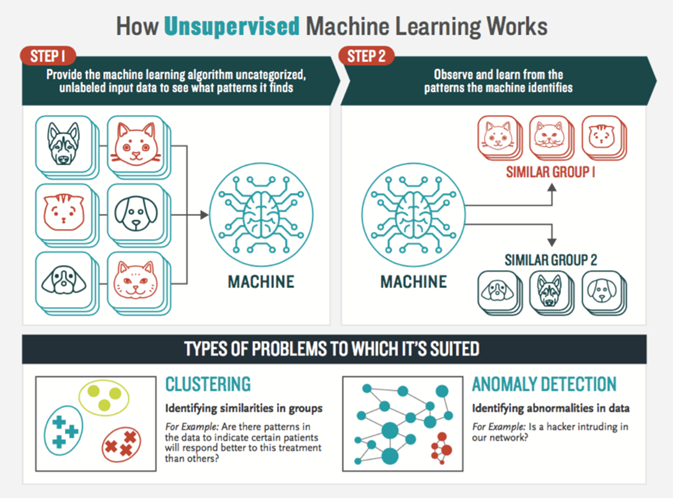
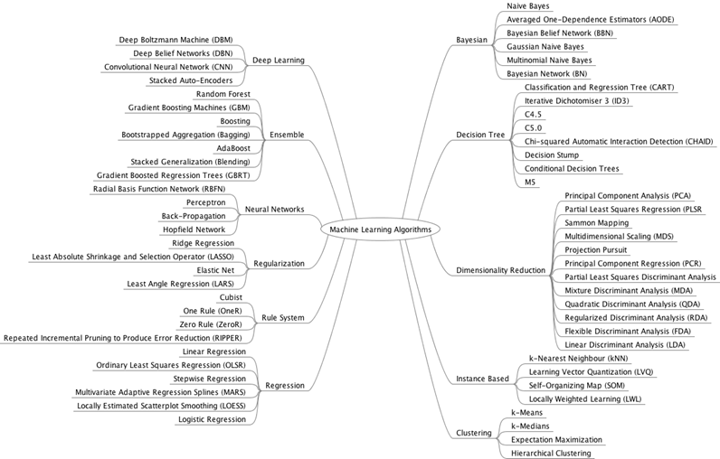

There are two common machine learning approaches:
1. Supervised Machine Learning
2. Unsupervised Machine Learning
A supervised learning algorithm takes a known set of input dataset and its known responses to the data (output) to learn the input-output relationship. A learning algorithm then trains a model to find that relationship. Next, training model is employed to generate a prediction for the response to new data or the test dataset. Supervised learning uses classification algorithms and regression techniques to develop predictive models.

Figure: How supervised machine learning works (Source: boozallen.com)
Supervised learning problems can be further grouped into regression and classification problems.
Classification: A classification problem is when the output variable is a category, such as “red” or “blue” or “disease” and “no disease”.
Regression: A regression problem is when the output variable is a real value, such as “dollars” or “weight”.
Examples of supervised learning includes Nearest Neighbors, Linear Regression, Logistic Regression, Support Vector Machines (SVMs), Neural Network, etc.
Unsupervised learning is a machine learning technique, where you do not need to supervise the model. Instead, you need to allow the model to work on its own to discover information. It mainly deals with the unlabelled data.

Figure: How unsupervised machine learning works (Source: boozallen.com)
Unsupervised learning problems further grouped into clustering and association problems. Examples include K-Means clustering, Density-based spatial clustering of applications with noise (DBSCAN), PCA, Hierarchical Cluster Analysis (HCA), etc.
There are two other types of learning approaches, which are semi-supervised and Reinforcement Learning.
Supervised learning relies on the labeled dataset whereas unsupervised learning does not need any labeled data. Since labeling data is usually time-consuming and costly, you will often have plenty of unlabeled instances and few labeled instances. Some algorithms can deal with data that’s partially labeled. This is called semi-supervised learning.
Most semi-supervised learning algorithms are combinations of unsupervised and supervised algorithms. For example, deep belief networks (DBNs) are based on unsupervised components called restricted Boltzmann machines (RBMs) stacked on top of one another. RBMs are trained sequentially in an unsupervised manner, and then the whole system is fine-tuned using supervised learning techniques.
Reinforcement learning is a type of dynamic programming where the software learns from its environment to produce an output that will maximize the reward. Here the software requires no external agent but learns from the surrounding processes in the environment.

Figure: Taxonomy of Machine Learning algorithms [source: https://stephanosterburg.gitbook.io/scrapbook/data-science/ml-mastery/jason-ml-mastery]